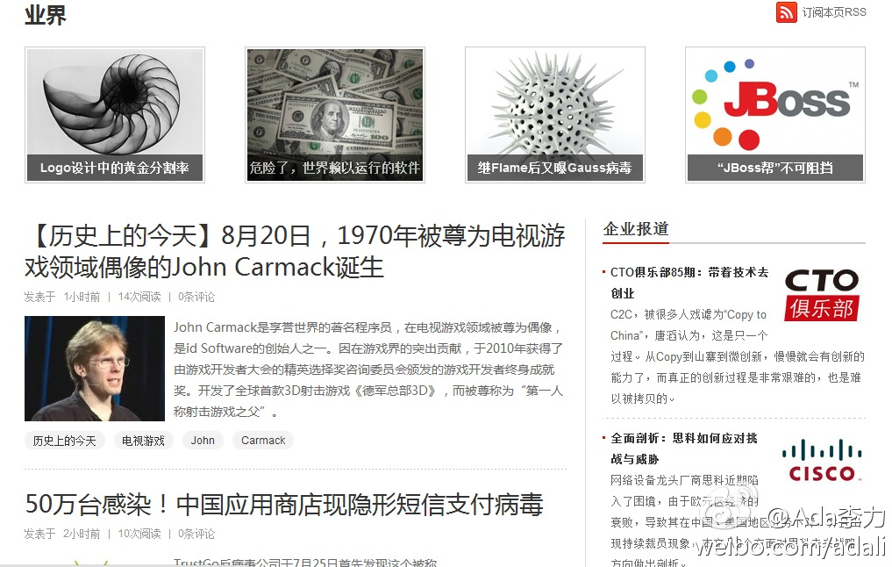
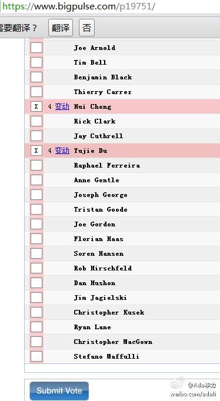

回复@尹锴_ink:如果赚钱的大部分结果不归自己所有，这些人为什么要去努力赚钱呢? 不用精神或者宗教之说来解释，很难回答这样的问题。 //@尹锴_ink:不靠谱。这是民主体制下阶级斗争的产物。自由地赚钱，和平等地再分配，通过税收和公共支出来实现动态平衡。@Ada李力:以往对美国的一些现象不解，那些富豪们"不择手段"地追逐财富，但同时也推动国家立法，征遗产税，把财富交给慈善组织。现在了解到，这些信念起源于清教徒: 努力工作是侍奉上帝的手段，合理使用财富，反对肉体欲望和迷恋身外财物。── 读《新教伦理与资本主义精神》
《新教伦理》导读中提到，现代社会中，支撑现代资本主义的宗教根源已经消失殆尽。无可逃避的实用主义网络吞噬了每个人。早期清教徒是自己想要成为拥有职业天职的人，而今天我们是被迫成为这样的人。── 这段内容怎么让我想起了马斯洛的五个层次需求理论。
我知道几个例子，一旦获得保障性安稳收入，例如三四十岁就拿到退休金，他/她们的选择就是不再工作。而我的假设是，工作不仅仅是获得收入，还承载其它需求，即使有钱，还是会工作的。但迄今我没有机会得到安逸退休金，所以也无从检验: 自己所认为的是一种信仰呢? 还是无奈之举?
回复@码农杰克:接受某份工作，就意味着要完成老板"强加"的任务。如果不接受，也还是可以选择离开的。如果是做自己想做的事情，最好方式是给自己当老板。 //@码农杰克:工作并不一定是做自己想要做的事，而是做老板强加给你的事@Ada李力:我知道几个例子，一旦获得保障性安稳收入，例如三四十岁就拿到退休金，他/她们的选择就是不再工作。而我的假设是，工作不仅仅是获得收入，还承载其它需求，即使有钱，还是会工作的。但迄今我没有机会得到安逸退休金，所以也无从检验: 自己所认为的是一种信仰呢? 还是无奈之举?
#第三届华东地区数据库大会#, 帮转.@板子:ThinkInLAMP第三届数据库大会火热报名中 我参加了ThinkInLAMP第三届数据库大会，#ThinkInLAMP第三届数据库大会# 将于10月14日在上海华纳风格酒店举行，转发或分享可享报名九折优惠，@thinkinlamp 大会官网: 网页链接
CSDN频道改版，界面看起来清爽许多，tag系统让分类信息更容易查找。四个主要频道是新闻，移动开发， 云计算，软件研发。后三个频道分别对应CSDN主办的移动开发者大会，云计算大会，和SD大会，线上内容和线下活动的有力结合。 
回复@LiPengSang:京东没处理，让报警。因为要去派出所备案，我觉得麻烦，就没继续。支持你起诉。我所知道的周围同事朋友中京东账户上钱被盗，你是第三个了。 //@LiPengSang:@Ada李力, 你账户被盗，最后是怎么处理的？！如果他们不给我赔，我就要起诉@京东商城 了！！！！@LiPengSang:京东网站的账户被盗，里边的余额259元全部被盗，什么狗屁网络！@京东商城必须赔偿！否则大家都别用京东了，太不安全了！！@京东商城@刘强东@平安北京
现在没有个人用户用Lotus的吧，这个Lotus Greenhouse注册时还必须是公司邮箱地址, 另外，是英文界面。@Ada李力:Google Doc不翻墙无法访问，有国内可以访问的类似替代产品，可以共享，共同编辑word, excel, powerpoint之类文档？
今天要给#openstack#董事会个人成员投票了，8月15日前注册成为会员的都会收到邮件"OpenStack Foundation - 2012 Individual Director Election"，内有投票链接。我投给了@ben_杜玉杰 @程辉 